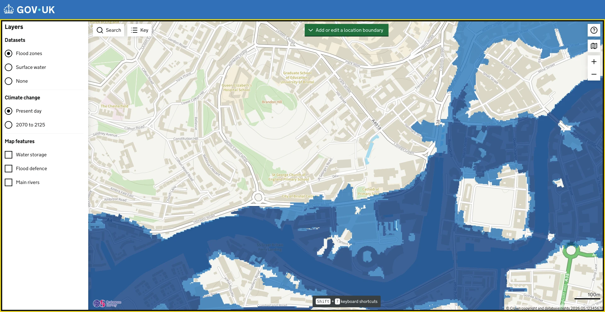

{% extends "layouts/main.html" %}
{% set pageName = "Map search enhancement - low fidelity prototype" %}

{% block header %}{% endblock %}
{% block footer %}{% endblock %}

{% block main %}
<main id="main-content" class="lofi">
  <h1 class="govuk-visually-hidden">Map search enhancement - low fidelity prototype</h1>

  <div class="lofi-stage" id="stage">
    

    <!-- Search button in the screenshot -->
    <button class="lofi-hotspot" id="search-open" type="button" style="left:293px;top:76px;width:102px;height:40px" aria-label="Search for a place in England"></button>

    <div class="lofi-search" id="search" hidden>
      <label class="govuk-visually-hidden" for="search-input">Search for a place, postcode, grid reference or coordinates</label>
      <input class="lofi-search__input" id="search-input" type="search" autocomplete="off" placeholder="Search for a place in england" aria-controls="suggestions" aria-expanded="false">
      <button class="lofi-search__close" id="search-close" type="button" aria-label="Close search">
        <svg width="20" height="20" viewBox="0 0 20 20" aria-hidden="true" focusable="false"><path d="M3 3l14 14M17 3L3 17" stroke="#0b0c0c" stroke-width="2.5" fill="none"/></svg>
      </button>
      <ul class="lofi-suggestions" id="suggestions" role="listbox" hidden></ul>
      <p class="lofi-nomatch" id="nomatch" hidden></p>
    </div>

    <!-- Marker and label, same style as a place name or postcode match -->
    <div class="lofi-marker" id="marker" hidden>
      <div class="lofi-marker__label" id="marker-label"></div>
      <svg class="lofi-marker__pin" width="28" height="38" viewBox="0 0 28 38" aria-hidden="true" focusable="false">
        <path d="M14 37C14 37 2 21.5 2 13.5a12 12 0 0 1 24 0C26 21.5 14 37 14 37z" fill="#d4351c" stroke="#fff" stroke-width="2"/>
        <circle cx="14" cy="13.5" r="4.5" fill="#fff"/>
      </svg>
    </div>

    <div class="lofi-toast" id="toast" hidden></div>
  </div>

  <div class="govuk-visually-hidden" aria-live="polite" id="announce"></div>

  <div class="lofi-note">
    <strong class="govuk-tag govuk-tag--grey">Low fidelity prototype</strong>
    <span>Try <strong>ST 58205 72708</strong>, <strong>358205, 172708</strong>, <strong>51.4518, -2.6029</strong> or <strong>51°27'06"N 2°36'10"W</strong></span>
    <a class="govuk-link" href="/design-spec/map-search-v3-9-0-0/">Back to the design spec</a>
  </div>
</main>

<style>
  body { background: #f3f2f1; overflow: hidden; }
  .lofi { position: relative; height: 100vh; margin: 0; padding: 0; }
  .lofi-stage { position: absolute; top: 0; left: 0; width: 1920px; height: 992px; transform-origin: top left; overflow: hidden; background: #fff; font-family: "GDS Transport", arial, sans-serif; }
  .lofi-map { position: absolute; top: 0; left: 0; width: 1920px; height: 992px; display: block; }
  .lofi-hotspot { position: absolute; background: transparent; border: 0; padding: 0; cursor: pointer; }
  .lofi-hotspot[hidden] { display: none; }
  .lofi-hotspot:focus-visible { outline: 3px solid #ffdd00; box-shadow: 0 0 0 7px #0b0c0c; }
  .lofi-search { position: absolute; left: 293px; top: 75px; width: 340px; }
  .lofi-search[hidden] { display: none; }
  .lofi-search__input { box-sizing: border-box; width: 100%; height: 42px; padding: 0 44px 0 10px; border: 2px solid #0b0c0c; border-radius: 0; font: inherit; font-size: 16px; color: #0b0c0c; background: #fff; }
  .lofi-search__input::-webkit-search-cancel-button { display: none; }
  .lofi-search__input:focus { outline: 3px solid #ffdd00; outline-offset: 0; box-shadow: inset 0 0 0 2px #0b0c0c; }
  .lofi-search__close { position: absolute; right: 2px; top: 2px; width: 38px; height: 38px; border: 0; background: #fff; cursor: pointer; display: flex; align-items: center; justify-content: center; }
  .lofi-search__close:focus-visible { outline: 3px solid #ffdd00; background: #ffdd00; box-shadow: inset 0 -4px #0b0c0c; }
  .lofi-suggestions { list-style: none; margin: 0; padding: 0; background: #fff; box-shadow: 0 2px 4px rgba(0,0,0,.25); }
  .lofi-suggestions[hidden] { display: none; }
  .lofi-suggestions li { padding: 7px 10px; font-size: 16px; color: #505a5f; border-bottom: 1px solid #f3f2f1; cursor: pointer; }
  .lofi-suggestions li[aria-selected="true"], .lofi-suggestions li:hover { background: #1d70b8; color: #fff; }
  .lofi-suggestions li b { color: inherit; }
  .lofi-suggestions li .lofi-type { display: block; font-size: 14px; }
  .lofi-nomatch { margin: 0; padding: 8px 10px; background: #fff; font-size: 16px; color: #0b0c0c; box-shadow: 0 2px 4px rgba(0,0,0,.25); }
  .lofi-nomatch[hidden] { display: none; }
  .lofi-marker { position: absolute; width: 0; height: 0; }
  .lofi-marker[hidden] { display: none; }
  .lofi-marker__pin { position: absolute; left: -14px; top: -38px; }
  .lofi-marker__label { position: absolute; bottom: 48px; left: 50%; transform: translateX(-50%); white-space: nowrap; background: #393f42; color: #fff; font-size: 14px; padding: 8px 10px; border-radius: 3px; }
  .lofi-toast { position: absolute; left: 50%; bottom: 80px; transform: translateX(-50%); background: #0b0c0c; color: #fff; padding: 12px 18px; font-size: 16px; }
  .lofi-toast[hidden] { display: none; }
  .lofi-note { position: fixed; right: 12px; bottom: 12px; left: 12px; display: flex; flex-wrap: wrap; align-items: center; gap: 8px; background: #fff; padding: 8px 12px; font-family: "GDS Transport", arial, sans-serif; font-size: 16px; box-shadow: 0 1px 4px rgba(0,0,0,.3); }
  .lofi-note .govuk-tag { white-space: nowrap; max-width: none; margin: 0; }
</style>

<script>
  (function () {
    // ---- the map view in the screenshot ----
    var CENTRE = { e: 358205, n: 172708, x: 1099, y: 528 }   // map centre in British National Grid and screen pixels
    var PX_PER_M = 0.9                                      // from the 100m scale bar
    var MAP = { x0: 283, y0: 67, x1: 1913, y1: 985 }
    var CENTRE_LL = { lat: 51.4518, lon: -2.60286 }

    // ---- existing place name and postcode results (static for the prototype) ----
    var PLACES = ['BS1 5AH, City of Bristol', 'BS10 5AH, City of Bristol', 'Bristol, City of Bristol', 'Manchester, Manchester', 'SW1A 1AA, City of Westminster', 'SJ1 1AA, (no such postcode)']
      .filter(function (p) { return p.indexOf('no such') === -1 })

    // ---- parsing coordinate formats ----
    var LETTERS = 'ABCDEFGHJKLMNOPQRSTUVWXYZ'   // grid letters skip I
    function ngrToEN (letters, e, n) {
      var l1 = LETTERS.indexOf(letters[0]); var l2 = LETTERS.indexOf(letters[1])
      if (l1 < 0 || l2 < 0) return null
      var x = ((l1 - 2) % 5) * 5 + (l2 % 5)
      var y = (19 - Math.floor(l1 / 5) * 5) - Math.floor(l2 / 5)
      if (x < 0 || x > 6 || y < 0 || y > 12) return null
      var digits = e.length
      var scale = Math.pow(10, 5 - digits)
      return { e: x * 100000 + parseInt(e, 10) * scale, n: y * 100000 + parseInt(n, 10) * scale }
    }
    function inGB (en) { return en && en.e >= 0 && en.e <= 700000 && en.n >= 0 && en.n <= 1300000 }
    function inGBLatLon (lat, lon) { return lat >= 49.8 && lat <= 60.9 && lon >= -8.7 && lon <= 1.8 }
    function latLonToApproxEN (lat, lon) {
      // good enough near the prototype's Bristol view
      return { e: CENTRE.e + (lon - CENTRE_LL.lon) * 69370, n: CENTRE.n + (lat - CENTRE_LL.lat) * 111250 }
    }
    function parse (raw) {
      var q = raw.trim()
      var m
      // full National Grid Reference: 2 letters plus a complete easting and northing (4+4 or 5+5 digits)
      if ((m = q.match(/^([A-Za-z]{2})\s*(\d{4}|\d{5})\s*(\d{4}|\d{5})$/)) && m[2].length === m[3].length) {
        var en = ngrToEN(m[1].toUpperCase(), m[2], m[3])
        if (!inGB(en)) return { type: 'nomatch' }
        return { type: 'coord', label: m[1].toUpperCase() + ' ' + m[2] + ' ' + m[3], kind: 'National Grid Reference', en: en }
      }
      // easting/northing pair
      if ((m = q.match(/^(\d{3,6}(?:\.\d+)?)\s*[,\s]\s*(\d{3,7}(?:\.\d+)?)$/))) {
        var en2 = { e: parseFloat(m[1]), n: parseFloat(m[2]) }
        if (!inGB(en2)) return { type: 'nomatch' }
        return { type: 'coord', label: Math.round(en2.e) + ', ' + Math.round(en2.n), kind: 'Easting, northing', en: en2 }
      }
      // decimal latitude/longitude
      if ((m = q.match(/^(-?\d{1,2}(?:\.\d+)?)\s*[,\s]\s*(-?\d{1,3}(?:\.\d+)?)$/)) && (q.indexOf('.') !== -1)) {
        var lat = parseFloat(m[1]); var lon = parseFloat(m[2])
        if (!inGBLatLon(lat, lon)) return { type: 'nomatch' }
        return { type: 'coord', label: lat.toFixed(5) + ', ' + lon.toFixed(5), kind: 'Latitude, longitude', en: latLonToApproxEN(lat, lon) }
      }
      // degrees, minutes, seconds
      var dms = /(\d{1,3})\s*[°º]\s*(\d{1,2})\s*['′’]\s*(\d{1,2}(?:\.\d+)?)?\s*(?:["″”]|'')?\s*([NSEW])/gi
      var parts = []; var d
      while ((d = dms.exec(q))) parts.push(d)
      if (parts.length === 2) {
        var vals = {}
        parts.forEach(function (p) {
          var v = parseInt(p[1], 10) + parseInt(p[2], 10) / 60 + (p[3] ? parseFloat(p[3]) : 0) / 3600
          var h = p[4].toUpperCase()
          if (h === 'S' || h === 'W') v = -v
          vals[(h === 'N' || h === 'S') ? 'lat' : 'lon'] = v
        })
        if (vals.lat === undefined || vals.lon === undefined || !inGBLatLon(vals.lat, vals.lon)) return { type: 'nomatch' }
        return { type: 'coord', label: vals.lat.toFixed(5) + ', ' + vals.lon.toFixed(5), kind: 'Latitude, longitude', en: latLonToApproxEN(vals.lat, vals.lon) }
      }
      // looks like a coordinate but could not be parsed
      if (/[°'"]/.test(q) || /^-?\d[\d\s.,-]*$/.test(q)) return { type: 'nomatch' }
      return { type: 'text' }
    }

    // ---- UI ----
    var $ = function (id) { return document.getElementById(id) }
    var stage = $('stage'); var openBtn = $('search-open'); var search = $('search'); var input = $('search-input')
    var closeBtn = $('search-close'); var list = $('suggestions'); var nomatch = $('nomatch'); var marker = $('marker')
    var markerLabel = $('marker-label'); var toast = $('toast'); var announce = $('announce')
    var current = []; var active = -1; var toastTimer

    function fit () {
      var s = Math.min(window.innerWidth / 1920, (window.innerHeight - 60) / 992)
      stage.style.transform = 'scale(' + s + ')'
      stage.style.left = Math.max(0, (window.innerWidth - 1920 * s) / 2) + 'px'
    }
    window.addEventListener('resize', fit); fit()

    function say (t) { announce.textContent = ''; setTimeout(function () { announce.textContent = t }, 50) }
    function showToast (t) { toast.textContent = t; toast.hidden = false; clearTimeout(toastTimer); toastTimer = setTimeout(function () { toast.hidden = true }, 5000) }
    function hideList () { list.hidden = true; nomatch.hidden = true; input.setAttribute('aria-expanded', 'false'); active = -1; input.removeAttribute('aria-activedescendant') }
    function render () {
      var q = input.value.trim()
      list.innerHTML = ''; nomatch.hidden = true; current = []
      if (q.length < 2) { hideList(); return }
      var r = parse(q)
      if (r.type === 'coord') {
        current = [r]
      } else if (r.type === 'nomatch') {
        list.hidden = true; nomatch.hidden = false
        nomatch.textContent = 'No results found. Check the grid reference or coordinates are correct and in Great Britain.'
        input.setAttribute('aria-expanded', 'false'); say(nomatch.textContent); return
      } else {
        var lq = q.toLowerCase().replace(/\s+/g, '')
        current = PLACES.filter(function (p) { return p.toLowerCase().replace(/\s+/g, '').indexOf(lq) !== -1 })
          .map(function (p) { return { type: 'place', label: p } })
        if (!current.length) { list.hidden = true; nomatch.hidden = false; nomatch.textContent = 'No results found.'; return }
      }
      current.forEach(function (item, i) {
        var li = document.createElement('li'); li.id = 'suggestion-' + i; li.setAttribute('role', 'option')
        if (item.type === 'coord') {
          li.innerHTML = '<b>' + item.label + '</b><span class="lofi-type">' + item.kind + '</span>'
        } else {
          var p = item.label.split(', '); li.innerHTML = '<b>' + p[0] + '</b>, ' + p.slice(1).join(', ')
        }
        li.addEventListener('mousedown', function (e) { e.preventDefault(); choose(item) })
        list.appendChild(li)
      })
      list.hidden = false; input.setAttribute('aria-expanded', 'true')
    }
    function placeMarker (x, y, text) {
      marker.style.left = x + 'px'; marker.style.top = y + 'px'; markerLabel.textContent = text; marker.hidden = false
    }
    function choose (item) {
      hideList(); input.value = item.type === 'coord' ? item.label : item.label
      if (item.type === 'coord') {
        var x = CENTRE.x + (item.en.e - CENTRE.e) * PX_PER_M
        var y = CENTRE.y - (item.en.n - CENTRE.n) * PX_PER_M
        if (x > MAP.x0 + 20 && x < MAP.x1 - 20 && y > MAP.y0 + 60 && y < MAP.y1 - 20) {
          placeMarker(x, y, item.label)
        } else {
          placeMarker(CENTRE.x, CENTRE.y, item.label)
          showToast('In the real map, the map would pan and zoom to this location. This prototype only shows Bristol')
        }
      } else if (item.label.indexOf('BS1 5AH') === 0) {
        placeMarker(CENTRE.x, CENTRE.y, item.label)
      } else {
        placeMarker(CENTRE.x, CENTRE.y, item.label)
        showToast('In the real map, the map would pan and zoom to this place. This prototype only shows Bristol')
      }
      say('Showing ' + item.label + ' on the map')
      // the search closes after a match is selected, as it does now
      search.hidden = true; openBtn.hidden = false; openBtn.focus()
    }

    openBtn.addEventListener('click', function () { openBtn.hidden = true; search.hidden = false; input.focus(); render() })
    input.addEventListener('input', render)
    input.addEventListener('keydown', function (e) {
      var items = list.querySelectorAll('li')
      if (e.key === 'ArrowDown' && items.length) { e.preventDefault(); active = Math.min(active + 1, items.length - 1) }
      else if (e.key === 'ArrowUp' && items.length) { e.preventDefault(); active = Math.max(active - 1, 0) }
      else if (e.key === 'Enter') { e.preventDefault(); if (current.length) choose(current[Math.max(active, 0)]); return }
      else if (e.key === 'Escape') { hideList(); return }
      else return
      items.forEach(function (li, i) { li.setAttribute('aria-selected', i === active ? 'true' : 'false') })
      input.setAttribute('aria-activedescendant', 'suggestion-' + active)
    })
    input.addEventListener('blur', function () { setTimeout(function () { list.hidden = true }, 150) })
    closeBtn.addEventListener('click', function () {
      hideList(); search.hidden = true; openBtn.hidden = false; openBtn.focus()
      if (!input.value) marker.hidden = true
    })
  })()
</script>
{% endblock %}
